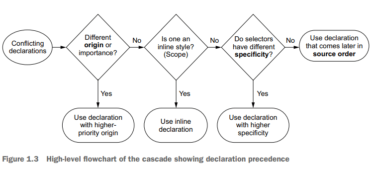

La cascada es el algoritmo por el cual el navegador decide qué estilos CSS aplicar a un elemento
La cascada especifica cómo el navegador debe manejar múltiples estilos que se aplican a la misma etiqueta HTML y qué hacer cuando las propiedades CSS entran en conflicto. La cascada es una parte fundamental del funcionamiento del lenguaje.
Los conflictos de estilo se producen en dos casos: por herencia y cuando uno o más estilos se aplican al mismo elemento.
La cascada es el algoritmo para resolver conflictos cuando se aplican varias reglas CSS a un elemento HTML. La forma en que se comporta la cascada es la clave para comprender el CSS.
La cascada puede ser una herramienta poderosa, pero su uso incorrecto puede conducir a hojas de estilo frágiles que dan pesadillas a los desarrolladores/as de front-end cada vez que tienen que hacer un cambio.
Las reglas de la cascada se consideran en este orden. Aunque hay varios autores de diversos libros de CSS que solo consideran tres etapas de manera general:
El siguiente diagrama de flujo muestra cómo son aplicadas estas reglas.
Estas reglas permiten que los navegadores se comporten de forma predecible al resolver cualquier ambigüedad en el CSS.